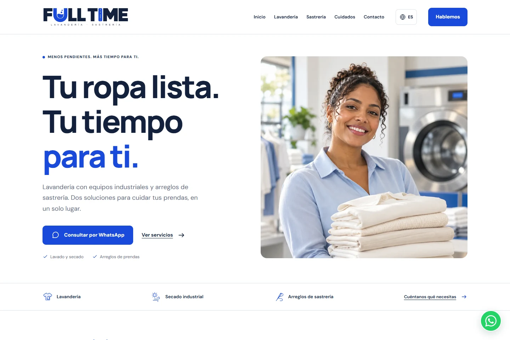
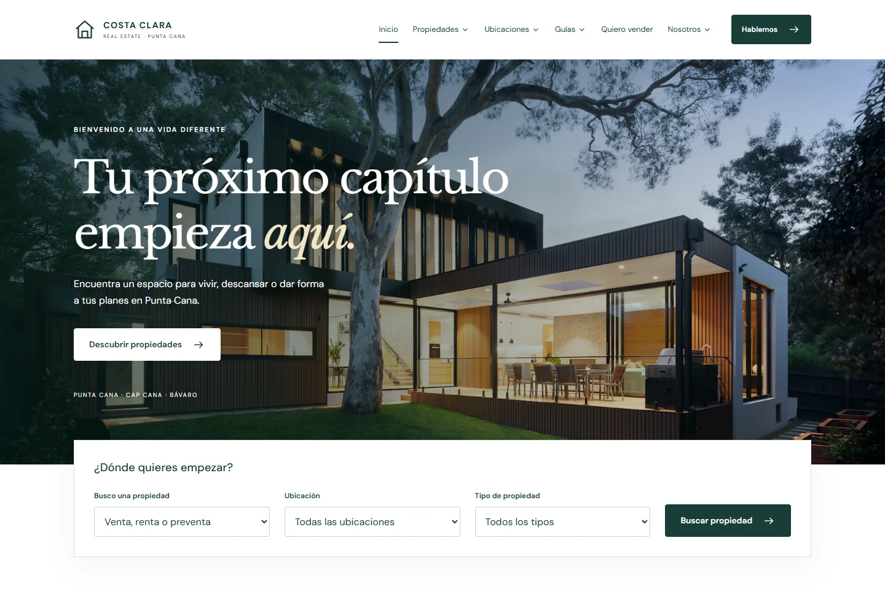

Negocio localLavandería y sastrería
FULL TIME
Servicios claros, ubicación y contacto directo para una lavandería y sastrería.
LUIS ALEJANDRO BRAVO BELLO
Transformo ideas en experiencias digitales claras, funcionales y fáciles de usar.
Desarrollador Full Stack · Estudiante de Ingeniería de Software
Desde República Dominicana

01 / TRABAJO SELECCIONADO
Tres proyectos publicados. Distintos objetivos,
la misma
atención a la experiencia.

Negocio localLavandería y sastrería
Servicios claros, ubicación y contacto directo para una lavandería y sastrería.

Catálogo webReal Estate
Un catálogo inmobiliario con filtros, fichas de propiedades y favoritos.

Aplicación con APIExploración Pokémon
Pokédex por región, filtros por tipo y catálogo de objetos conectado a PokéAPI.
02 / DETRÁS DEL CÓDIGO
Luis Bravo /
Creo aplicaciones para resolver problemas reales, conectando interfaces, lógica y datos.
Estudio Ingeniería de Software en la Universidad Central del Este (UCE). Me interesan especialmente C#, .NET y SQL, y continúo ampliando mis conocimientos de JavaScript y Spring Boot.
Al construir una web, cuido tanto lo que la persona ve como la estructura que lo hace posible: contenido ordenado, navegación clara y responsabilidades bien separadas.
03 / MI CAJA DE HERRAMIENTAS
Herramientas con las que trabajo y aprendo.
La elección empieza
por el problema.
Contenido semántico e interfaces que se adaptan a distintos dispositivos.
Lógica de aplicación, organización de responsabilidades y bases de datos.
Control de versiones y un entorno para desarrollar, revisar y mejorar.
04 / CURRÍCULUM
Formación, tecnologías y proyectos en un documento sencillo de consultar y compartir.
05 / NOTAS DE DESARROLLO
Apuntes de desarrollo con ejemplos, decisiones y referencias para seguir aprendiendo.
HTML01
Cómo elegir elementos que expliquen el contenido y construir una navegación comprensible.
Leer artículo : HTML semántico: estructura antes que estiloJavaScript02
Un punto de partida para separar navegación, filtros y contacto sin complicar una web pequeña.
Leer artículo : JavaScript por responsabilidades, no por cantidad de archivosAPIs03
Una consulta con fetch no termina al recibir JSON: la interfaz también debe explicar qué sucede.
Leer artículo : Consumir una API: carga, datos y errores06 / APRENDIZAJE CONTINUO
Formación en seguridad, nube e inteligencia artificial.
AWS Entrena
Constancia de participación
Ver certificado : Fundamentos de Nube (PDF, nueva pestaña)Academia ESET
Certificado de finalización
Ver certificado : Gestión y respuesta a incidentes (PDF, nueva pestaña)BIG school
Certificado de asistencia
Ver certificado : Curso de Iniciación al Desarrollo con IA (PDF, nueva pestaña)07 / SIGUIENTE PASO
¿Tienes un proyecto, una oportunidad o una idea para compartir? Me encantará conocerla.
luisbravobello@gmail.com